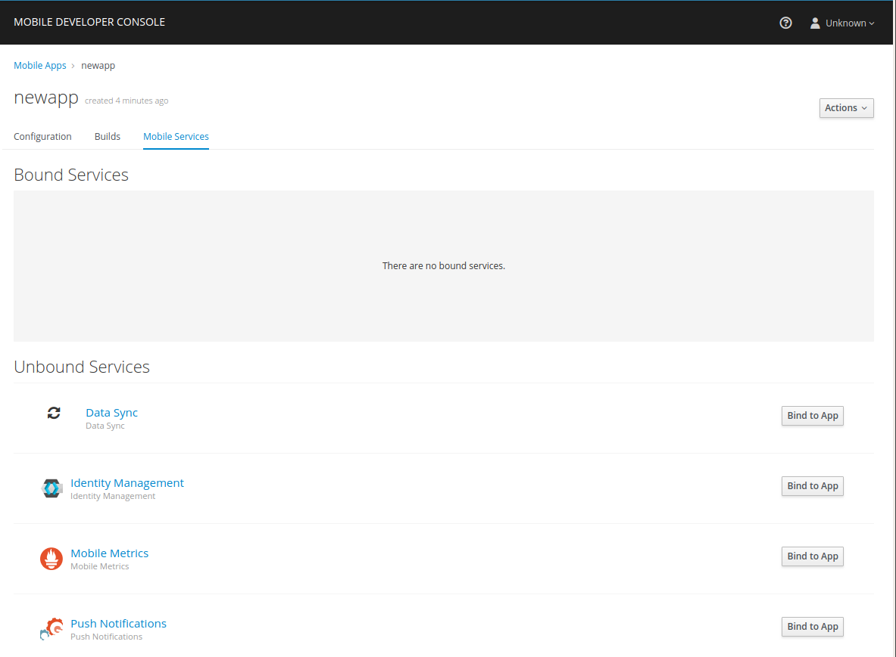

Data Sync
- Introduction
- Setting Up the Data Sync Mobile Service
- Managing your data sources using the Data Sync UI
- Defining a Schema using the Data Sync UI
- Adding Resolvers to a Schema
- Adding Subscriptions to a Schema
- Using the Data Sync SDK
- Monitoring Data Sync Service
- Authentication for Data Sync
- Role Based Authorization in Data Sync
Introduction
| The Data Sync mobile service is currently in development. Current released version is 0.1.0. The software is available for you to use and investigate, however it might not work as expected and functionality might change over time. |
The Data Sync service allows you to synchronize data between multiple mobile clients and easily query exactly the data you need.
-
Synchronize data between multiple clients
-
Define and connect your own data sources
-
Retrieve and update your records using GraphQL
-
Robust offline experience and good performance thanks to Apollo caching
Additional resources
For more information, see the Apollo Client Documentation
Setting Up the Data Sync Mobile Service
Provisioning Data Sync Service
Prerequisites
-
You are running OpenShift with Mobile Services as described in Setting up AeroGear Mobile Services on OpenShift.
To provision the Data Sync mobile service:
-
Log into the OpenShift console.
-
Create a new project or choose an existing project.
-
Select Catalog from the left hand menu.
You can filter the catalog items to only show mobile specific items by selecting the Mobile tab.
-
Click Services and choose the Data Sync service.

-
Follow the wizard for provisioning that service.
If prompted to Create a Binding, choose Do not bind at this time.
When provisioning a Data Sync Service, you are prompted to set the following:
| Field | Description |
|---|---|
Postgres Storage Size (Gb) |
Size of persistent volume for Postgres (default value is recommended) |
Postgres User |
User name that will be used to connect to postgres ('user' will be used if blank) |
Postgres Password |
Password to connect to Postgres (generated if blank) |
Query depth limit |
Limit the complexity of the queries solely by their depth |
Query complexity limit |
Limit the complexity of the queries based on the data |
|
If the Postgres password was generated, retrieve the password using: Wait for the database provisioning to finish before executing this command. |
Once the wizard steps are completed, navigate to the Project Overview in OpenShift to see the newly provisioned service. Provisioning a service may take some time.
Binding a Mobile Client with the Data Sync Service
To use mobile services, you must represent your mobile app in OpenShift using a Mobile Client, and that Mobile Client must be associated with the mobile service. This association is called binding and it is necessary for your mobile app to use that service.
To bind a Mobile Client with a mobile service:
Procedure
-
Navigate to the Overview of your OpenShift project.
-
Select the Mobile Client name listed in the Mobile Clients section.
-
Navigate to Mobile Services tab.
 -
Click Create Binding and follow the Create Binding wizard to associate the Mobile Client with the Data Sync Service.
-
Fill out the binding parameters required by the Data Sync Service.
Managing your data sources using the Data Sync UI
The Data Sync UI allows you to manage your data sources.
To access the Data Sync UI, you will need to:
-
Make sure the Data Sync service is provisioned.
-
Select a route in OpenShift.
-
Login with your OpenShift credentials.
| On first login you need to provide the OpenShift OAuth service permissions to read your user account. |
Data Source Introduction
A Data Source is a representation of your data storage solution. The Data Source consists of a Name, a Type, and a Configuration. The Type of Data Source which are currently supported are Postgres and InMemory. For information on how to use Postgres, refer to the documentation here. The In Memory Data Source that is currently supported is NeDB, for more information on how to use this please refer to the documentation here.
| The In Memory Data Source is not recommended for production use. |
Data Source Options
The data sources tab on the Data Sync UI allows you to perform the following operatations:
View Existing Data Sources
This is the default view on the Data Sync UI. It lists all of the existing data sources. This view currently displays the data source name and the type of the data source.
Data sources can be filtered using the name property.
Edit an Existing Data Source
To edit an existing data source, choose the Edit Data Source option from the data source menu.
Update the data source with the new values.
Delete an Existing Data Source
To delete a data source, choose the Delete Data Source option from the data source menu. Next confirm that you wish to delete the data source.
| When you delete a data source, all resolvers that are attached to it will also be deleted. |
Create a New Data Source
If no data source exists, a new data source can be created by clicking the Add Data Source button. Select the type of your data source from the dropdown. For more information about the In Memory option have a look at the In Memory Option. Information about the Postgres option can be found here.
In Memory Data Sources
You need to provide a name for the data source. The only other option is TimeStamp Data. If checked, timestamps will be stored along with your data in NeDB.
To find more about NeDB and how to write queries, have a look at the Github Repository.
|
| Some features like unique indices and persistence are not supported in the In Memory database and it is therefore only recommended for evaluation purposes. |
Postgres Data Sources
You need to provide a name for the data source. Postgres has a number of other required options:
-
Server: The host name of the PostgreSQL instance.
-
Port: The Network Port used by PostgreSQL (defaults to
5432). -
Database: The name of the database to connect to. PostgreSQL servers can host multiple databases.
-
Username: The username of the PostgreSQL user account.
-
Password: (Optional) The password of the PostgreSQL user account.
| To find out more about Postgres and how to work with it, have a look at the official documentation. |
You can test your data source before saving by clicking on the Test button. Data Sync will then attempt to connect to the provided PostgreSQL server. If the connection fails you will see the error message in the dialog.
|
Defining a Schema using the Data Sync UI
A schema describes the structure of the data the Data Sync deals with. It allows you to configure your data types, queries and mutations in a format that is independent of the underlying data source. To learn more Schemas have a look at the GraphQL documentation.
The Schema Editor
The Schema Editor can be found under the Schema tab in the UI. It consists of a text editor where
you can write and edit your schema and a structure view on the right. To try it out you can use a simple schema like this:
type Query {
notes: [Note]
}
type Comment {
from: String
text: String
}
type Note {
text: String!
comments: [Comment]
}Save the schema by pressing the Save Schema button. Upon saving the Data Sync will check your schema for errors and compile it to a JSON representation.
You can download this JSON representation by clicking on Download Compiled Schema. This is needed in the client SDKs.
| When defining custom scalars on your schema it is important to assert that the data types match the expected type. This is important as custom Scalar definitions could potentially lead to security vulnerabilities such as SQL Injection. |
Structure View
After saving a schema the structure view on the right side of the Schema tab will be updated. If your schema contains errors you will see the error message there.
Otherwise you will see a list of all your types, queries, mutations and subscriptions. This view is read only and can be used to quickly browse a schema.
Playground
A playground is provided which allows you to test your changes to the schema. To use the playground, navigate to the tab in the UI and then write any queries or mutations you wish. Some useful features of the playground include code completion, query variables and full http header support. For more information about the playground and what is possible please visit Prisma Playground.
Adding Resolvers to a Schema
A schema describes the structure of your data and the operations to query or mutate that data.
When a query is executed, GraphQL runs the attached Resolver. Resolvers implement the actual
operations on the data and can be attached to Queries, Mutations and Properties of custom types.
| to learn more about resolvers and their role in GraphQL have a look at the official documentation. |
Defining Resolvers
Resolvers are defined in the Resolvers tab of the UI. If you have a valid schema you can see its
structure on the left side and the resolver details on the right side.
Structure View
The structure view is different from the one in the schema tab in that it is grouped
by Queries, Mutations, Subscriptions and Custom Types. All entries can be expanded to see their
arguments (queries and mutations) or fields (custom types). The lines in the view have three columns:
-
Name: The name of the Query/Mutation/Custom Type
-
Argument count: The number of fields / arguments
-
Resolver: Shows the name of the Resolver’s data source when one is assigned. Otherwise shows
No resolver. Click here to start editing the resolver details.
Resolvers can only be attached directly to Queries and Mutations and not their arguments. For Custom Types the opposite is true: you usually want to assign resolvers to more complex properties, for example the comments field in the Note type of the above example.
|
Resolver Details
Here you can add the details of a resolver. The following fields must be provided:
-
Data Source: The data source this resolver gets executed against.
-
Request Mapping Template: The query that is executed to retrieve a result.
Mutationsin GraphQL are required to return a result too. NOTE: Have a look at mapping templates to learn how to make use of thecontextobject in your queries.
The following fields are optional:
-
Response Mapping Template: Allows you to transform the result before passing it to the caller. For example you could convert a string response to JSON, or parse a XML response.
-
Pre Hook: A WebHook that is called before running the
Request Mapping. -
Post Hook: A WebHook that is called if the
Request Mappingwas run successfully.
| The Drop-Down buttons above the Request and Response Mappings fields allow you to pick one of the pre-defined templates of your data source. |
Request Mapping Templates
To write meaningful queries you need access to the arguments passed to the resolver by the client.
This is achieved by making use of the context object. Request and response mappings are evaluated in the Data Sync backend and you can use Handlebars templates to inject values from the context object.
The structure of the context object is the following:
context: {
arguments, // The arguments passed to the resolver
parent // Parent object reference
}For example, a request mapping to retrieve all the comments for a particular Note could look like this:
select * from Comments where NoteId = '{{ context.parent.id }}'Response Mapping Templates
Use a response mapping to transform a result or extract certain properties from the result. As with request mappers, response mapper have access to a context object with the following format:
context: {
result // The result returned from the query or mutation
}Handlebars helpers can be applied to the result. Currently the following helpers are available:
-
toJSON: Parses a string and returns the result as JSON.
-
toBoolean: Parses a string and returns the result as either
trueorfalse. -
convertNeDBIds: Changes all id fields in the input object from
_idtoid, the latter being a more common name for a GraphQL property.
An example response mapper for an in memory result could look like this:
{{ toJSON (convertNeDBIds context.result) }}Adding Subscriptions to a Schema
GraphQL subscriptions allow you to be notified in realtime of changes to your data.
Subscriptions are defined in the Schema as their own type, just like with Query and Mutation:
type Query {
notes: [Note]
}
type Mutation {
addNote(text: String!)
}
type Subscription {
noteAdded: Note
}Learn more about Subscriptions and other operation types at GraphQL documentation
Using the Data Sync SDK
This section will help you to set up the Data Sync service SDK in your App.
Setting Up the Sync Mobile Service
The Sync SDK is using the Apollo GraphQL Client behind of the scenes to handle GraphQL.
Apollo client requires some configuration to work.
Monitoring Data Sync Service
Prerequisites
-
You have provisioned the Mobile Metrics service.
-
You have provisioned the Data Sync service.
| The Mobile Metrics Service and Data Sync Service must be provisioned in the same OpenShift project to access data. |
Overview
After the Mobile Metrics Service (includes Grafana for visualization and the Prometheus monitoring system) and Data Sync Service are provisioned, you should be able to see the "Data Sync Metrics" in the list of available dashboards (navigate to Grafana’s exposed URL → Log in → Home → Select Data Sync Metrics).
Dashboard panel descriptions
The Data Sync dashboard consists of several panels which give you an overview of the specific events and resources, such as memory usage, CPU usage, resolved operation count etc.
Below you will find a detailed description of each panel and its values.
Singlestat Panels
Singlestat panels show you the main summary of a single data series.
-
CPU Usage: CPU usage percentage of Data Sync Service used currently.
-
Memory Usage: The amount of memory currently used by the Data Sync Service
Graph panels
Used to show how certain values change over time, e.g. the number of operations resolved.
-
Memory Usage in Time: The amount of memory used by the Data Sync Service over time
-
CPU Usage in Time: The percentage of CPU used by the Data Sync Service over time
-
Queries/Mutations Resolved: Overview of the resolved queries and mutations over time
-
Resolver Timings: Overview of the how long it took to resolve operations over time.
Authentication for Data Sync
By default, Data Sync does not provide any authentication and authorization mechanism. Users can configure Data Sync to work with Identity Management to provide authentication and authorization for their applications.
Prerequisites
-
Make sure the Data Sync service is provisioned.
-
Make sure the Identity Management service is provisioned.
-
Create an app that works with the Identity Management service.
Binding the Data Sync service to an Identity Management Instance
To benefit from authentication, developers need to connect (bind) Data Sync into Identity Management Instance.
Creating the binding secret from a Keycloak Instance
-
Navigate to your Openshift project
-
Select Applications and then Provisioned Services
-
Copy the Instance Name field from the Data Sync service
-
Select the Identity Management service from the list of Provisioned Services
-
Select the Create Binding option
-
Enter the copied Instance Name of the provisioned Data Sync service
A secret will be created as a result of this binding.
Making the Secret available to the Data Sync
-
Select View Secret on the Identity Management details page
-
Select Add to Application and select the data-sync-server from the options
-
Select the Volume option and enter the following mount path:
/opt/keycloak
The mount path must be set to /opt/keycloak for the Data Sync to be configured to use the secret.
|
Making Secret available to application
By default, the secret is not visible to the server application. To point the server to the application, please add a new environment variable:
KEYCLOAK_CONFIG_FILE=/opt/keycloak/config
| When working with OpenShift with self-signed certificate, add NODE_TLS_REJECT_UNAUTHORIZED=0 environment variable to deployment config of data-sync-server, otherwise the Keycloak-protected Data Sync won’t work - the playground will be unavailable. |
Role Based Authorization in Data Sync
Prerequisites
Role based authorization can be applied to Queries, Mutations, Subscriptions and individual fields in a GraphQL schema, when Data Sync is used with Keycloak. This means it is possible to restrict individual fields and/or operations defined in the GraphQL schema to users with specific roles in Keycloak.
Take a publishing platform as an example. Role Based Authorization could be used to ensure only users with the role editor can perform the editPublication mutation.
Data Sync currently supports authorization using client roles and realm roles defined in keycloak. Consult the Keycloak documentation to learn how to create roles.
The @hasRole Directive
Role based authorization can be defined using the @hasRole directive. The @hasRole directive is a special annotation that can be applied to
-
Fields
-
Queries
-
Mutations
-
Subscriptions
The @hasRole usage is as follows:
-
@hasRole(role: String) -
Example -
@hasRole(role: "admin"]) -
If the authenticated user has the role
adminthey will be authorized. -
@hasRole(role: [String]) -
Example -
@hasRole(role: ["admin", "editor"]) -
If the authenticated user has at least one of the roles in the list, they will be authorized.
The default behaviour is to check client roles. For example, @hasRole(role: "admin"]) will check that user has a client role called admin. @hasRole(role: "realm:admin"]) will check if that user has a realm role called admin
The syntax for checking a realm role is @hasRole(role: "realm:<role>"). For example, @hasRole(role: "realm:admin"). Using a list of roles, it is possible to check for both client and realm roles at the same time.
Example: Using the @hasRole Directive to Apply Role Based Authorization on a Schema
The following example demonstrates how the @hasRole directive can be used to define role based authorization on various parts of a GraphQL schema. This example schema represents publishing application like a news or blog website.
type Post {
id: ID!
title: String!
author: Author!
content: String!
createdAt: Int!
}
type Author {
id: ID!
name: String!
posts: [Post]!
address: String! @hasRole(role: "admin")
age: Int! @hasRole(role: "admin")
}
type Query {
allPosts:[Post]!
getAuthor(id: ID!):Author!
}
type Mutation {
editPost:[Post]! @hasRole(role: ["editor", "admin"])
deletePost(id: ID!):[Post] @hasRole(role: "admin")
}
There are two types:
-
Post- This might be an article or a blog post -
Author- This would represent the person that authored a Post
There are two Queries:
-
allPosts- This might return a list of posts -
getAuthor- This would return details about an Author
There are two Mutations:
-
editPost- This would edit an existing post -
deletePost- This would delete a post.
Role Based Authorization on Queries and Mutations
In the example schema, the @hasRole directive has been applied to the editPost and deletePost mutations. The same could be done on Queries.
-
Only users with the roles
editorand/oradminare allowed to perform theeditPostmutation. -
Only users with the role
adminare allowed to perform thedeletePostmutation.
This example shows how the @hasRole directive can be used on various queries and mutations.
Role Based Authorization on Fields
In the example schema, the Author type has the fields address and age which both have hasRole(role: "admin") applied.
This means that users without the role admin are not authorized to request these fields in any query or mutation.
For example, non admin users are allowed to run the getAuthor query, but they cannot request back the address or age fields.